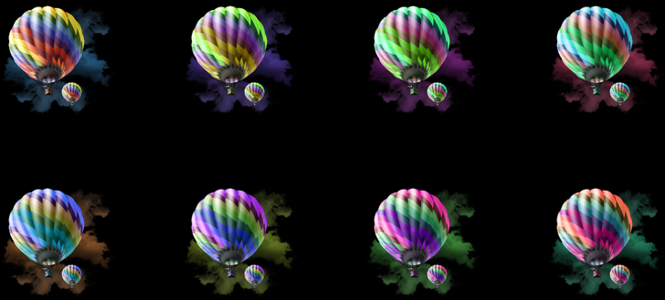
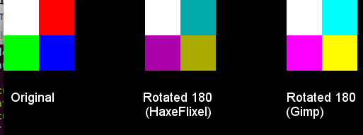

Learn Haxe
An easier way to learn how to use the Haxe core and related technologies.
Hue Rotating Sprites in HaxeFlixel
Tagged with: HaxeFlixel
I began a quest to answer a question: can I hue rotate sprites, within HaxeFlixel itself? The answer is yes, although it requires a non-trivial amount of work.
The first clue is that the HaxeFlixel FlxSprite class contains a pixels field, which contains BitmapData; a list of actual pixel values (colours in the format 0xRRGGBB) which you can access (and manipulate). My first try included changing these via this formula; the results looked strange.
I abandoned that route and decided to use this method, which uses a matrix to multiply the RGB component values based on the hue rotation.
BitmapData has an applyFilter method. For the final filter parameter, which lacks documentation, you can pass in an instance of ColorMatrixFilter.
ColorMatrixFilter doesn't appear in the HaxeFlixel docs (it's from Flash). You pass in the values for a 5x4 matrix; the first three columns of the first three rows take in RGB values.
I translated and passed in the values provided in the Stack Overflow answer above; it looks like this:
var hueRotation:Int = 0; // degrees. Tested with values from 0...359
// cosA and sinA are in radians
var cosA:Float = Math.cos(hueRotation * Math.PI / 180);
var sinA:Float = Math.sin(hueRotation * Math.PI / 180);
sprite.pixels.applyFilter(sprite.pixels, sprite.pixels.rect, new Point(), new ColorMatrixFilter(
[cosA + (1.0 - cosA) / 3.0, 1.0/3.0 * (1.0 - cosA) - Math.sqrt(1.0/3.0) * sinA, 1.0/3.0 * (1.0 - cosA) + Math.sqrt(1.0/3.0) * sinA, 0, 0,
1.0/3.0 * (1.0 - cosA) + Math.sqrt(1.0/3.0) * sinA, cosA + 1.0/3.0*(1.0 - cosA), 1.0/3.0 * (1.0 - cosA) - Math.sqrt(1.0/3.0) * sinA, 0, 0,
1.0/3.0 * (1.0 - cosA) - Math.sqrt(1.0/3.0) * sinA, 1.0/3.0 * (1.0 - cosA) + Math.sqrt(1.0/3.0) * sinA, cosA + 1.0/3.0 * (1.0 - cosA), 0, 0,
0, 0, 0, 1, 0])); // identity rowThe output worked:

Three three things didn't work as expected:
- I used several copies of the same image, and every copy looked the same. It turns out that HaxeFlixel shares
BitmapDataacross instances of the same sprite; I bypassed this by settingsprite.pixels = sprite.pixels.clone(). - The effect didn't apply on Flash. For Flash, you need to add
sprite.dirty = true(possibly in a#if flash...#endblock). - The colours are slightly off. If you rotate a simple block of colours (red, green, blue, and white), you see that the colours appear a bit darker than they should be (compare it to what you get in GIMP):

The result looks great. And the performance? In my case, I intended to hue-rotate sprites once (and keep them at that hue forever). Manipulating the sprite's .pixels directly is the same as loadimg a graphic that already has the transformation -- there's no additional cost in each frame if we only do this once when the sprite is created. (Thanks to Gama11 for pointing this out.)
For the time being, you can view the complete HaxeFlixel proof-of-concept project here, on GitHub.